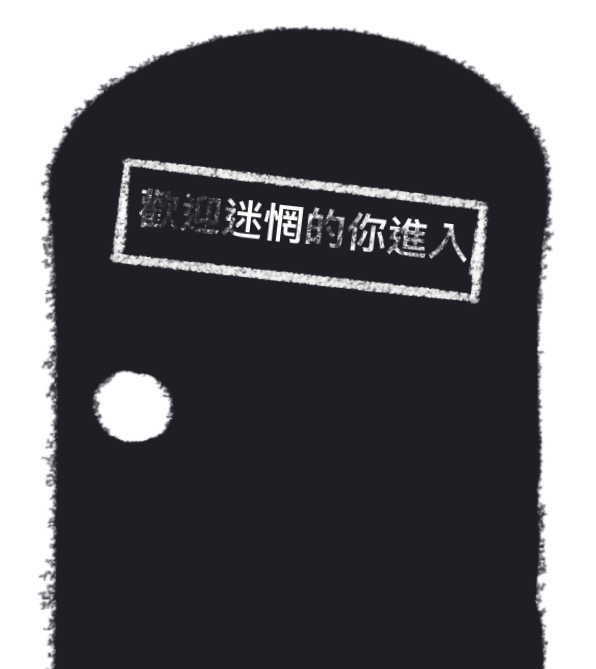
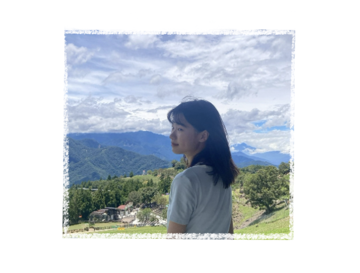
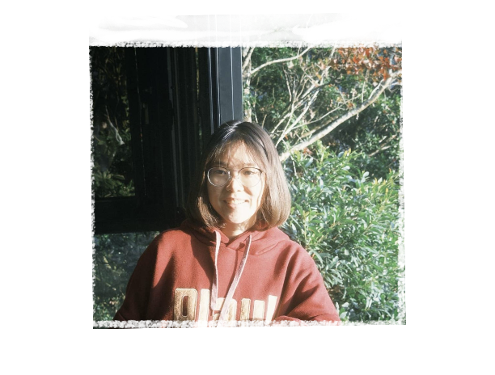
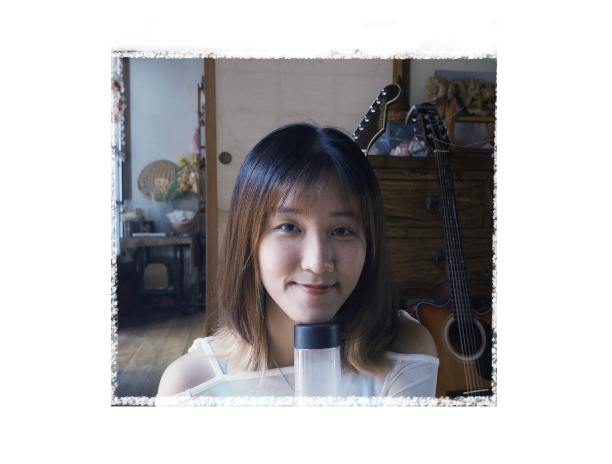
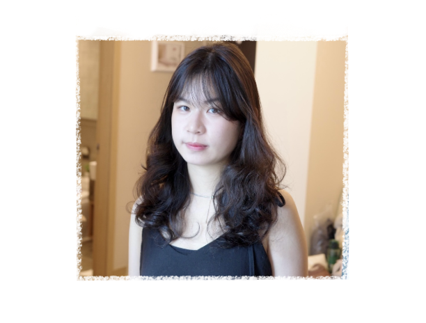

為什麼取名「若失公寓」？
取自迷惘的英文 lost 諧音，而若有所失的定義也是迷惘，因此名為「若失公寓」。 在大學經歷了許多新的體驗，但也需要面對人際、課業等各種問題。過程中，時常會陷入「迷惘」的狀態，像在迷霧中尋找出口。 因此，我們打造了一個公寓，保存這樣若有所失的狀態，邀請參與者來體驗，了解自己不是一個人，更加認識「迷惘」這堂必修課。
我們為什麼要做若失公寓？
從自身經歷出發
同為大學生的我們，隨著年紀增長、畢業將至，面對未來的各種選擇，同樣感到迷惘，因此想了解其他人是否也有一樣的困擾。
呈現迷惘背後的原因
迷惘的狀態，有時會讓人心煩意亂，我們希望可以藉由若失公寓，將迷惘背後可能的成因與經歷，具體呈現在大家面前。
藉由迷惘認識自己
我們希望透過不同角色的經驗，讓參與者回想自己的經歷，思考在不同情況下，自己和角色的選擇或感受有什麼不同。
找到面對迷惘的行動
迷惘並非負面詞彙，我們想讓大家知道，感到迷惘能夠做些什麼，也能不做些什麼。
若失公寓的負責人們

簡語彣
網頁開發｜角色設計

黃曉嵐
體驗設計師｜角色設計

黃宥瑄
社群行銷｜角色設計

曹芳綾
專案管理｜角色設計